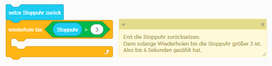
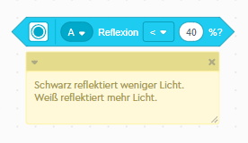
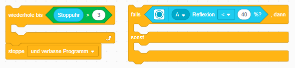
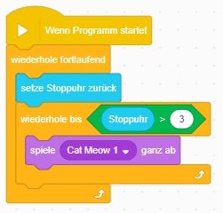

integriere einen Timer. Der Timer soll uns später dabei helfen, zu messen wie lang wir einer Linie folgen.
Für den Farbsensor ist es oft schwer die Farbe zu erkennen, wenn die Oberfläche reflektiert. Deshalb messen wir mit dem Farbsensor nicht Farbe, sondern Reflektion. Schwarz reflektiert weniger.
Programmiere den Roboter so, dass er eine links Kurve fährt außer wenn er wenig Reflexion erkennt, dann soll er eine Rechtskurve fahren. Vergiss den Timer nicht und verwende folgende Blöcke:
Wenn du es geschafft hast einer einfachen schwarzen Linie zu folgen. Verwende komplizierter Linien und optimiere dein Programm, dass der Roboter auch Kurven folgt.
Das Programm zählt bis 4 Sekunden, spielt einen Sound und beginnt von Vorne.
